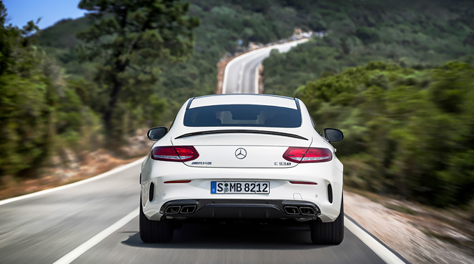

The new Mercedes-AMG C 63 Coupé is the next step on the way to yet more technical and visual distinctiveness. The far-reaching technical modifications are evident at first sight: strikingly flared front and rear wheel arches, an increased track width and larger wheels give the Coupé a muscular look while at the same time providing a basis for the highly agile longitudinal and lateral dynamics.
The brand’s typical “Driving Performance” is taken to new heights also with the C 63 Coupé. The AMG 4.0-litre V8 biturbo engine generating 350 kW (476 hp) or 375 kW (510 hp) is just as much a completely in-house development from Affalterbach as, for example, the sophisticated AMG RIDE CONTROL suspension with electronically controlled shock absorbers, the set-up of the AMG DYNAMIC SELECT transmission modes, the rear-axle limited-slip differential or the dynamic engine mounts.
Taking its inspiration from the S-Class Coupé, the completely redesigned rear end includes a diffuser insert that revives a typical feature from the world of motorsport. The special design of the laterally positioned, optical air outlet openings improves the rear air flow, allowing it to break away with aerodynamically advantageous precision.
